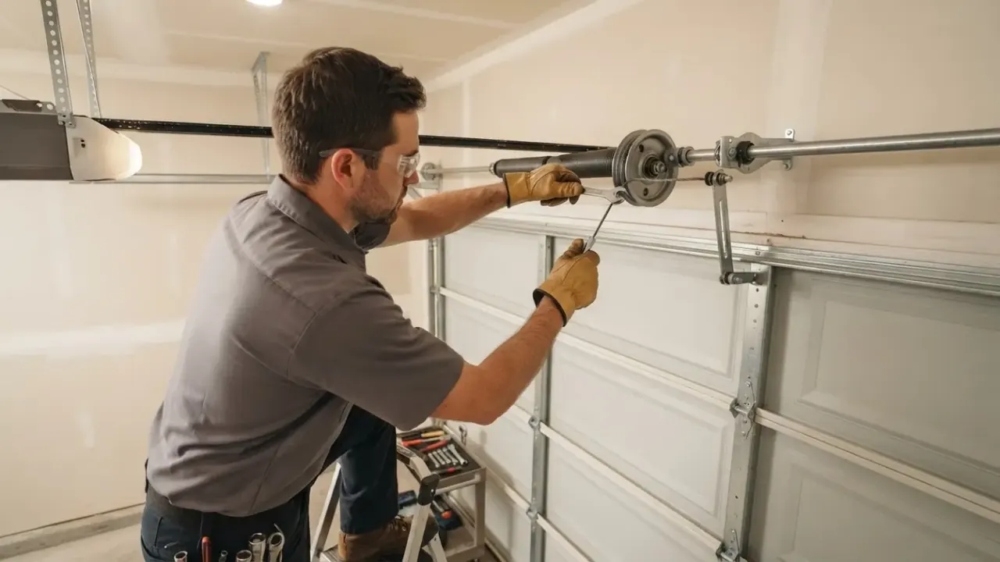

Steel, wood, and insulated doors set, balanced, and code-compliant.
New Garage Door Installation in Tampa, Done Right the First Time
A sagging, rusted, or storm-battered door is fixed for good by a new installation, usually within the same week. The opening is measured, the old panels hauled off, and the new door set on fresh torsion springs and galvanized cables. When a door is past patching, that is said straight, and the quote is one Tampa homeowners can actually budget for.
Live dispatcherUpfront optionsBacked workmanship
The basics
What Is New Garage Door Installation?
Fitting a complete new door means panels, tracks, springs, and hardware, all new. It is needed when the old door is badly damaged or worn out, when a door no longer insulates or secures the garage, or when a new build needs its first door. The opening is measured first and a door chosen to fit the home, then the old door comes out, new tracks are set level, and the springs are balanced. Done properly, the new door runs quietly, seals against Tampa rain and heat, and works smoothly with the opener.
What's included
What Our New Door Install Includes
Each install is priced as one complete job, not a door plus a pile of extras. This is what a standard replacement includes, and add-ons like a new opener or window inserts are priced up front so the decision comes before the order.
Removal and Haul-Away
The opener is disconnected, the old springs unwound safely, and the door taken down, with every panel, track, and spring hauled off. Nothing is left at the curb for bulk pickup.
New Door and Hardware
The quote covers the door, tracks, torsion springs, cable drums, galvanized steel cables, hinges, and rollers. Springs are sized to the exact door weight rather than a generic chart.
Balance and Safety Test
The door is balanced to hold at half-open, opener travel limits are set, photo eye sensors aligned, and the auto-reverse confirmed to trip. That is the UL 325 safety standard check, run on every job.
Weather Seal and Bottom Rubber
The door arrives with a new bottom rubber seal and perimeter weather seal. That sealing is what holds driving rain, dust, and bugs out of a Tampa garage through storm season.
Remote and Keypad Programming
Existing remotes and wall mount keypads are programmed to the new opener, or new ones are set up for an upgrade. Every clicker in the house leaves working from the driveway.
Permit and Inspection Coordination
Where Hillsborough County requires a permit for the replacement, it is pulled and the inspector met. The signed-off paperwork goes to you for your records and your insurance company.
Service overview
What New Garage Door Installation in Tampa Really Involves
A new installation in Tampa is the full removal and replacement of the existing door and its hardware: panels, tracks, torsion springs, cable drums, rollers, hinges, and weather seal. The rough opening and headroom are measured first, since a door a quarter-inch off will bind against the jamb within a month. Then the bottom section is set level, the panels stacked, the torsion springs wound to the door's exact weight, and the cables tensioned on both drums. Every door hung is balanced to lift with one hand and stay put at any height.
Tampa doors take a beating that doors in drier climates never see. Salt air off the bay eats through cheap hardware, summer heat bakes the bottom rubber seal until it cracks, and afternoon storms push water under the door into the garage. Dented panels and snapped cables turn up constantly in South Tampa and Apollo Beach. Rather than a thin one-page quote, the scope is real: door model, spring size, opener compatibility, and permit handling.

How we workWe verify the cause, compare realistic options, and confirm the repair before we leave.
The service timeline
How Our Install Day Runs
Install day follows a set order, though the opening and the old door shape the details. Five steps carry it from measurement to walkthrough.
Measure and Quote
We come out and measure the rough opening, check headroom and side room, and look at the existing opener. A written price comes the same visit, door, hardware, haul-away, and permit included when one is required. No surprise line items on install day.
Order and Stage
The door is ordered in the size, color, and window layout picked. Standard sizes in white or almond usually land in 5 to 10 business days. A call goes out the day it reaches the shop, and an install morning is locked in that works for you.
Tear Out and Prep
On install day the opener is disconnected, the old torsion springs unwound safely, and the door dropped. Jambs and header are inspected for rot or cracked block, since a new door on a soft frame never hangs right. Any repair needed there is handled before the first panel is set.
Set, Wind, and Balance
The bottom section is set, the panels stacked, and new tracks, hinges, and rollers installed. Torsion springs are wound with proper winding bars to the door's weight, and the door is balanced to hold at half-open. This is the step that separates a good install from a callback.
Test, Program, and Walk Through
The opener is reconnected or installed, the photo eye sensors aligned, and remotes and wall mount keypads programmed. Then the door runs through a full open-close cycle a dozen times and the auto-reverse is checked. A walkthrough of the safety features comes before we pull out.
Tools & methods
Tools and Methods We Use
An install is only as good as the gear behind it. These are the tools that let the door be set right the first time.
Garage door torsion spring winding bars
Winds and releases torsion springs safely. Winding a spring by hand or with the wrong bar is how people get hurt, so matched steel bars are used on every job.
Garage door cable drums and winding cones
Cable tension on each side of the door is set by these. They are replaced with the door so the cables pull evenly and the door does not cock to one side.
Garage door panel lift
Heavy sections are lifted and held in place while hinges are set and the door stacked. The bottom section stays level, and the jamb is saved from a dropped panel.
Garage door track bender
Rollers glide instead of catching once the track radius and angle are dialled in. Binding at the curve almost always means the track wants one small, precise adjustment.
Garage door torque wrench
Lag bolts and hinge fasteners are torqued to spec. Under-tightened hardware works loose and rattles, while over-tightened hardware strips the jamb.
Garage door opener remote tester
This tells you if the fault sits in the remote, the keypad, or the receiver board, so a new remote is not bought when the opener's logic board is the real issue.
Use cases
When Tampa Homeowners Replace a Door
Doors get replaced for different reasons in Tampa. These are two recent jobs, and what each one needed.

Storm-Damaged Door in Apollo Beach
A coastal two-car door came with rusted hardware, a dented middle panel, and a cable snapped during a storm. Salt air had eaten the original hinges down to bare metal. A new corrosion-resistant door went up with galvanized steel cables and coated tracks, plus a belt-drive LiftMaster opener.
Smart Upgrade in New Tampa
A builder-grade door from the early 2000s had noisy steel rollers, a tired chain-drive opener, and a keypad that worked half the time. An insulated door with nylon rollers went in, paired with a smart Chamberlain opener.
Problems we solve
Problems a New Door Solves for Good
When the door itself is the problem, repairs only buy time. At that point a replacement works out cheaper across the next five years.
Door sags and rubs the frame every time it opens
Frame and header come first, then the new door goes onto new tracks with torsion springs sized to it. It runs square and the opener stops working overtime. Sagging doors in older Tampa homes are usually 15 to 25 years old and past saving.
Rust and rot along the bottom panel
The door is replaced with a model rated for coastal exposure, and a fresh bottom rubber seal is set. When only one panel is gone and the rest is sound, a panel replacement is quoted instead, saving the full cost.
Springs and cables failing every couple of years
Springs on a new door are matched to its exact weight and cycle rating, and the cables and drums go in at the same time. The whole lifting system starts fresh rather than one tired part at a time.
Door will not close because the sensors keep tripping
Once the new door is in, the photo eye sensors are aligned and the opener travel set to match. An old opener can be swapped during the same visit, so the whole system is matched and the door closes clean every time.
Pricing process
What New Garage Door Installation Costs
$900 - $3,200 installed, depending on door size, material, and opener
Door size and material
Size and material drive the price most. A single-car steel door is the cheaper end, a 16-foot double costs more, and wood or carriage-house styles sit above basic steel.
Insulation and windows
An insulated door runs $150 to $500 more than a non-insulated one, and window inserts add $200 to $600 depending on how many are wanted. In a Tampa garage, insulation pays back in comfort.
Opener replacement
An old or undersized opener adds $350 to $700 installed for a new belt-drive or smart unit. Doing it during the door install saves a second service call.
Cost factors at a glance
| Cost factor | What affects the price |
|---|---|
| Typical range on this page | $900 - $3,200 installed, depending on door size, material, and opener |
| Door size and material | Size and material drive the price most. |
| Insulation and windows | An insulated door runs $150 to $500 more than a non-insulated one, and window inserts add $200 to $600 depending on how many are wanted. |
| Opener replacement | An old or undersized opener adds $350 to $700 installed for a new belt-drive or smart unit. |
Ranges are the ones stated on this page; you get a written estimate before work starts.
Customer reviews
What Tampa Customers Say
★★★★★
“Our old wood door was rotted at the bottom and the springs had snapped twice in two years. They measured on a Tuesday, the new Clopay door was in the next week, and it was hung and balanced in one day. The garage is quieter and it actually seals against the rain now. Fair price, no upsell on stuff I did not need.”
★★★★★
“I wanted an insulated door with windows and a smart opener. They walked me through three options without pushing the most expensive one. Install crew was on time, cleaned up every scrap of the old door, and programmed my phone app before they left. The permit inspection passed first try.”
★★★★★
“Salt air had eaten the hardware on my old door and a cable snapped. Instead of just patching it, they showed me the rust in the panels and quoted a full replacement. New door, new tracks, new LiftMaster opener. Two months in and it still runs smooth and quiet. Worth the money.”
Book with confidence
What to Look for Before You Book
A few checks up front can save you from a poor install and a surprise bill.
- Get the licence number up front, and confirm it matches the name on the quote.
- Have the full quote in writing, door or opener model, parts, labour, permit, and removal of the old door included.
- Find out whether a permit is needed and whether the company handles it.
- Read recent reviews, with a focus on customers who had the same kind of installation.
- Find out what the warranty covers, the door or opener and the installation work, how long it runs, and get it in writing.
- Lock in the install date and arrival window, and keep a number to call if the schedule changes.
Style
Choosing the Style: What Suits a Tampa Home
The style of a new door should suit the house, not just the catalog. A carriage-house style door, with its crossbuck design and decorative hardware, suits the older homes in Hyde Park and South Tampa, and it is the most popular choice for those neighborhoods. A clean, modern door with long horizontal panels and glass suits the newer builds in New Tampa and Westchase. A traditional raised-panel door suits almost any home, and it is the safe choice when you are unsure.
Color matters as much as style. A white or light-colored door reflects the Tampa sun and keeps the garage cooler, while a dark door absorbs heat and can fade faster. The color should match the trim of the house, not fight it, and it should be a color you will still like in ten years. Windows are worth considering too: they let light into the garage, which matters if the garage is used as a workspace, but they reduce insulation slightly and they are the first thing to break in a storm. The technician will show you samples and photos of doors on similar homes, so the choice is made with your eyes, not just a brochure.
- Carriage house: suits older homes in Hyde Park and South Tampa, with crossbuck design and decorative hardware.
- Modern: long horizontal panels and glass suit newer builds in New Tampa and Westchase.
- Raised panel: the traditional choice that suits almost any home.
- Color: light colors reflect the sun and keep the garage cooler; dark colors absorb heat and fade faster.
- Windows: let light in, but reduce insulation slightly and are the first thing to break in a storm.
Measuring
Measuring for a New Door: Why the Numbers Matter
A new door is made to fit your opening, and the measurements decide everything. The width and height of the opening decide the size of the door. The headroom above the opening decides whether torsion or extension springs will fit, and whether a standard opener or a low-headroom jackshaft is needed. The side room on each side decides whether the tracks will fit. And the depth of the garage decides whether the opener rail will fit, and whether there is room for the door to open fully.
Getting the numbers wrong is expensive. A door ordered a half-inch too wide will not fit, and a door ordered too short will leave a gap at the bottom that lets in rain and heat. That is why the measuring is done at your home, with the opening measured in several places, because openings are rarely perfectly square, especially on older Tampa homes where the framing has shifted. The technician measures before ordering, and the door that arrives is the door that fits your opening, not a standard size that almost fits.
- Width and height: the size of the opening decides the size of the door.
- Headroom: decides whether torsion or extension springs fit, and which opener is needed.
- Side room: decides whether the tracks will fit on each side.
- Garage depth: decides whether the opener rail fits and the door opens fully.
- Measured in several places: openings are rarely perfectly square, especially on older homes.

How much does new garage door installation cost in Tampa?
Most single-car doors run $900 to $1,800 installed, and double-car doors run $1,400 to $3,200, depending on material, insulation, and windows. A basic non-insulated steel door sits at the low end; a carriage-house or wood-look door with windows sits at the high end. Add $150 to $400 if you need a new opener, and $75 to $200 for permit and inspection fees in Hillsborough County.
How long does new garage door installation take in Tampa?
A standard residential door is a one-day job, usually 4 to 6 hours from tear-out to final test. Custom sizes, wood doors that need staining, or doors with a new opener and smart keypad can run into a second day. We give you a firm window when we schedule, and we do not leave a door half-hung overnight.
Who installs new garage doors in Tampa?
We do, and we are a garage door contractor (licence number available on request) working out of Tampa. Our installers handle the removal, the new door, the torsion springs, the opener wiring, and the permit inspection. We do not sub the job out to a handyman or a general contractor who has never wound a torsion spring.
What is the best new garage door brand in Tampa?
For salt-air and storm exposure, Clopay and Amarr insulated steel doors hold up best, and they are the two we install most. Wayne Dalton and Chamberlain make solid doors and openers at a lower price point. The right pick depends on your opening size, your wind-load requirement, and whether you want windows, so we walk you through the trade-offs before you commit.
Should I replace my garage door opener when I get a new garage door in Tampa?
Not always. If the opener is in good condition and strong enough for the weight of the new door, it can stay. A heavier insulated door may need a stronger opener, and a very old opener without modern safety sensors should be replaced at the same time. The technician checks the opener during the measure visit and tells you before install day whether it will work with the new door.
What should I do to prepare for a new garage door installation in Tampa?
Clear the garage around the door and move cars out, so the installers have room to work. Take down anything stored on the walls near the tracks, and make sure there is a clear path from the driveway to the garage. The installer removes the old door and takes it away, so you do not need to arrange disposal yourself. You will need to be home to approve the door position and to see the final safety test.
Will a new garage door improve my home insulation in Tampa?
Yes, if you choose an insulated door. An insulated steel door keeps the garage cooler in summer and reduces heat leaking into rooms above or beside the garage. It also makes the door quieter and stiffer. A basic uninsulated door does very little for insulation, so if keeping the garage cool matters to you, ask about insulated models and their R-value when you choose the door.
How do I choose a style for my new garage door in Tampa?
Start with the house. A carriage-house style suits older homes in Hyde Park and South Tampa, a modern door with long panels and glass suits newer builds, and a traditional raised-panel door suits almost any home. Light colors reflect the Tampa sun and keep the garage cooler. The technician will show you samples and photos of doors on similar homes, so you can see the style on a real house before deciding.
How long does it take to get a new garage door installed in Tampa?
A standard door that is in stock can usually be installed within a week of ordering. A custom size, a specific style, or a wind-rated door can take two to four weeks from order to installation, because it is made to fit your opening. The installation itself is a one-day job in most cases. The technician will give you the real lead time before you order, so there are no surprises.
Do new garage doors come with a warranty?
Yes. A new door carries a manufacturer warranty on the door itself, and the installation is warrantied on the work. The length of the warranty depends on the door and the parts: springs, hardware, and the opener each have their own terms. The technician will explain what is covered, for how long, and what is needed to keep the warranty valid, such as yearly maintenance, before you commit.
Related services
Related Services

Garage Door Repair
When the door is still solid but a hinge, roller, or track is failing, repair costs less than replacement. The diagnosis is honest about when a repair will outlast the door and when it will not.
Garage Door Spring Repair
New doors arrive with new torsion springs sized to the door weight. Keeping the existing door means the springs are repaired or replaced so it lifts smoothly again, without the bang of a snapped spring.
Garage Door Opener Repair
A new door works best with an opener matched to its weight and travel. An opener that runs without lifting is repaired, or a new one is set up during the same visit.Ready when you are
Get Your New Garage Door Installation in Tampa Scheduled
Call with your opening size and a door, a timeline, and a firm price will be quoted. We are a garage door contractor (licence number available on request) serving Tampa and Hillsborough County, standing behind the work for 12 months.

Talk with the local team
Request New Garage Door Installation
Call, text or email and a real person answers, day or night. Tell us what the door is doing and we will give you a price range on the spot plus the soonest arrival window. Most calls placed before mid-afternoon get a same-day visit anywhere in Hillsborough County.